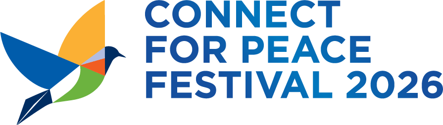
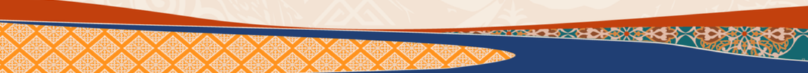

Мастер-класс Асхата Еркимбая. Сегодня вы не слушаете про вайб-кодинг — вы его делаете.
⚡ Этот сайт собран вайб-кодингом за один вечер — ноль строк кода вручную. К концу сессии вы поймёте, как это работает.
Введите имя (или ник) — сайт распределит вас в одну из шести редакций Центральной Азии. Сегодня вы работаете в её составе.
Соберите редакционного ИИ-ассистента, который из потока новостей выбирает темы именно для вашей аудитории и объясняет, почему они важны.
Прежде чем открывать инструмент — ответьте командой на 4 вопроса (подход Джо Амдитиса, Center for Cooperative Media):
Журналист в вайб-кодинге — это продакт-менеджер: не пишет код, а точно формулирует, что нужно.
И пятый вопрос — этический, он задаётся до первых четырёх: кто отвечает за результат? Всегда человек. Подробнее — в разделе «Этика и границы».
Все работают на бесплатном тарифе Google AI Studio. Выберите трек по силам — апгрейды ниже никто не отменял.
Поля заполнены из карточки вашей редакции — можно менять.
Настоящий вайб-кодинг: описываете приложение словами — получаете работающий веб-инструмент на Gemini.
Прошли все четыре? Станьте советником соседней редакции.
Ваш агент — это «мозг». До автоматики новостей ему не хватает двух вещей:
«Руки» и «будильник» тоже собираются вайб-кодингом — без программиста. Пошаговый гайд, как дособрать Радар дома, — в материалах ниже.
Вопросы после сессии: Асхат Еркимбай — ayerkimbay@internews.org
«LLM помогают организовать информацию и ускорить рутину, но основная журналистская работа — репортёрство, верификация, этические решения и сторителлинг — остаётся целиком в ваших руках» — Joe Amditis, Knight Center.
